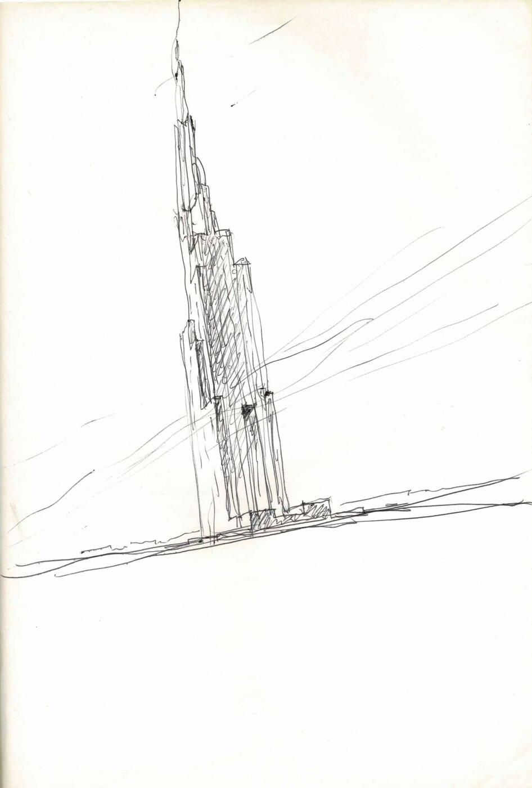
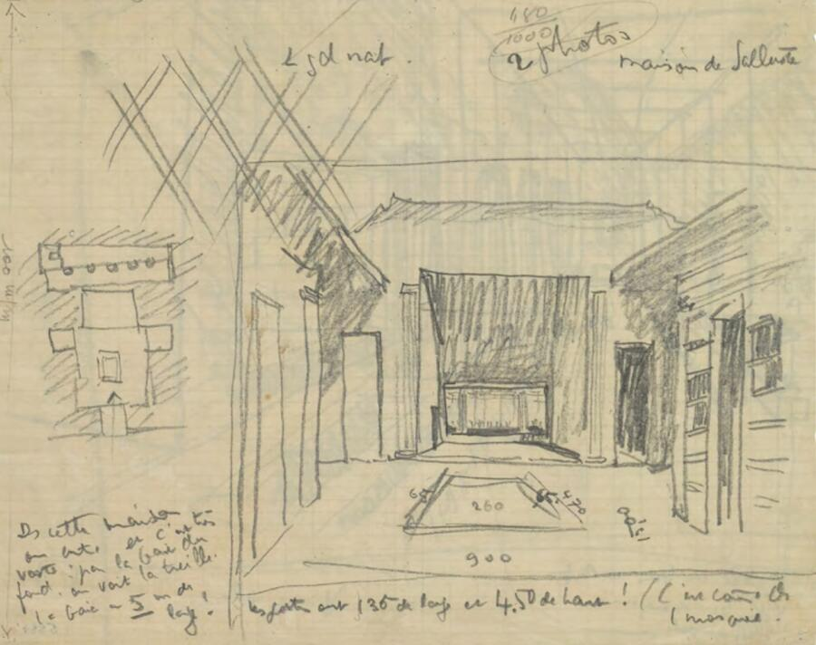
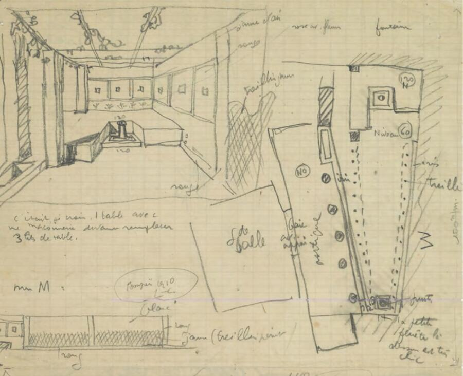
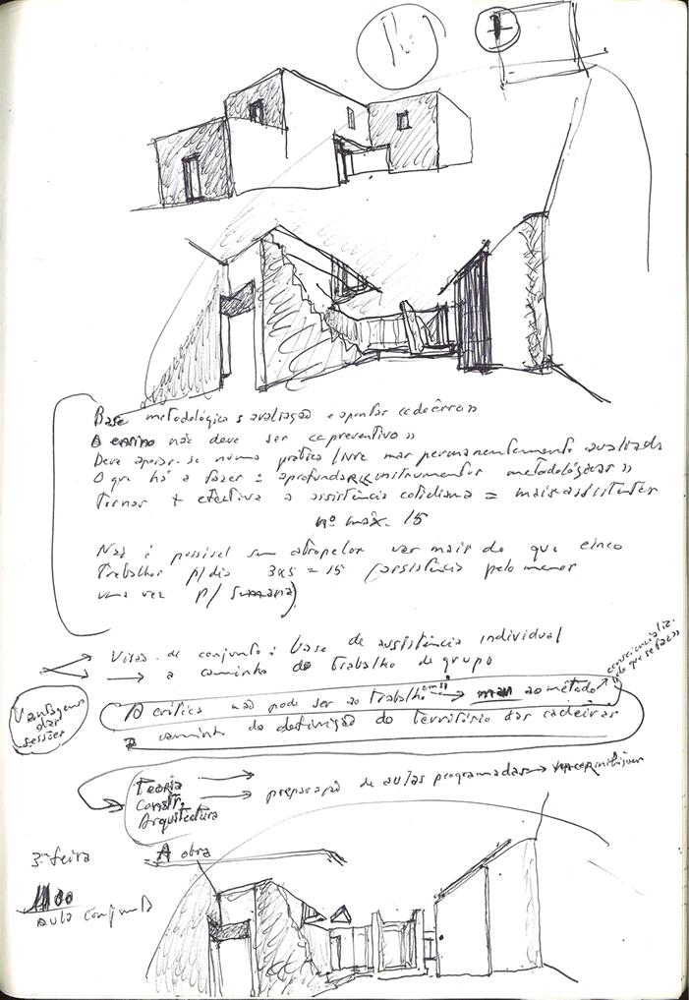
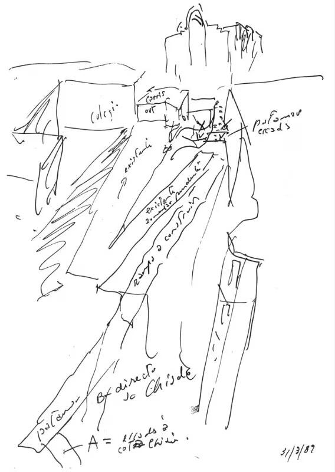
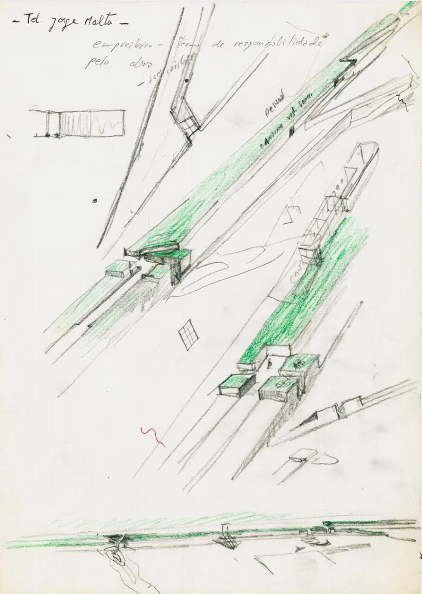
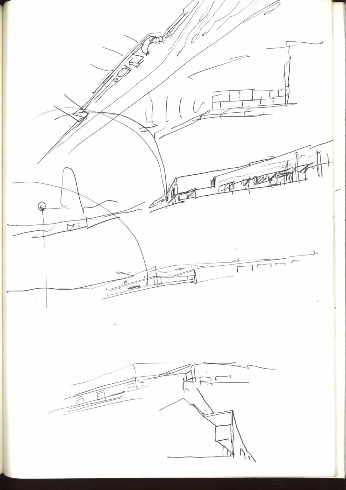
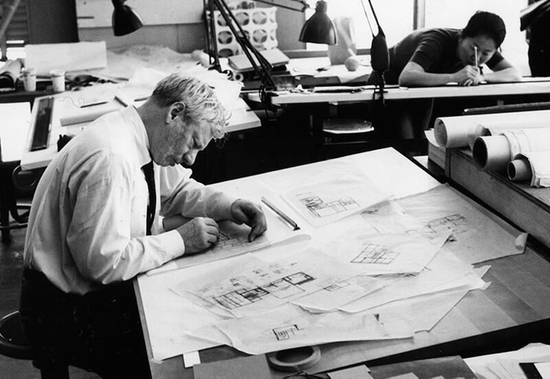

Ogni architetto inizia dal proprio sguardo sul mondo: l’osservazione, il disegno e il gesto sono forme originarie di comprensione spaziale, prima ancora dell’apprendimento tecnico. Le immagini proposte mostrano come, nei taccuini e nelle abitudini di lavoro, si manifesti una vocazione progettuale: un modo personale di organizzare la realtà, selezionare ciò che conta, trattenere relazioni.


L’interesse di Le Corbusier per la Casa di Sallustio a Pompei è documentato nel suo diario di viaggio, il Carnet IV del suo Viaggio in Oriente, realizzato nel 1911. L’osservazione di questa dimora romana ha alimentato la sua riflessione sull’architettura, in particolare sulla composizione spaziale, il rapporto tra interno ed esterno e i tracciati regolatori.
La Casa di Sallustio e il Viaggio in Oriente
Influenza sull’opera di Le Corbusier




Lo schizzo tratto dal Caderno 32 dell’architetto Álvaro Siza è un disegno di un “grattacielo immaginario” realizzato nel 1979. Lo schizzo originale fa parte della collezione Drawing Matter, mentre la collezione più ampia degli sketchbook di Siza è conservata presso il Canadian Centre for Architecture (CCA).
Dettagli dello schizzoGli sketchbook sono stati il mezzo principale utilizzato da Siza per esplorare idee architettoniche, prendere appunti e documentare conversazioni con persone e progetti.
